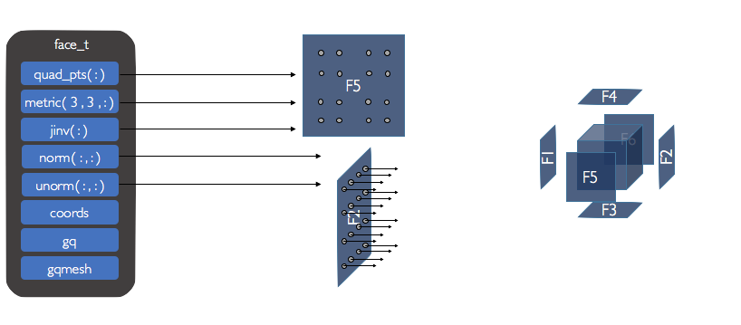

Computational Grid¶
Coordinate Systems¶
ChiDG supports two coordinate systems: Cartesian and Cylindrical. In the
code, many things are referred to only by coordinate index. The convention for these
indices is defined here as:
{kind=link}
Additionally, effort has been put forth to represent data in a manner consistent with vector-calculus. For example, test function gradient components are computed as:
The transformation between Cartesian and Cylindrical coordinates is given by
Mesh¶
A mesh_t instance contains the entire description of the computational grid for
the local processor. A mesh_t conatains an array of domain_t objects, one
for each block. A mesh_t object also contains boundary condition geometry,
located in the bc_patch_group component. The bc_patch_group objects
are independent of the domains. A given bc_patch_group could potentially
include references to faces on multiple domain objects.
type :: mesh_t
type(domain_t), allocatable :: domain(:)
type(bc_patch_group_t), allocatable :: bc_patch_group(:)
contains
end type mesh_t
{kind=link}
Domain¶
The domain_t data structure contains an entire geometry description for a single
domain. This exists as an array of element_t types, and array of face_t types,
and a chimera_t instance. An element_t exists for every element in the domain_t
domain. For a given element_t, a face_t instance exists for each face.
{kind=link}
{kind=link}
Elements¶
An element_t instance contains information needed by the framework and also
general information that could be useful to users. This includes:
elem_pts(:) An array of points defining the element in real space(cartesian, cylindrical, etc.)
quad_pts(:) An array of points defining the location of each volume quadrature node in real space.
metric(3,3,:) An array, defining for each quadrature point, a matrix of element metric values.
jinv(:) An array of inverse element jacobian values at each volume quadrature node.
grad1(:,:) An array of gradients of the basis functions with respect to physical coordinates at volume quadrature nodes.
{kind=link}
Metric terms¶
Metric terms are computed by considering the transformation of a differential volume in physical space to reference space as
The terms \(\partial \vec{x}/\partial \vec{\xi}\) are computed from the polynomial expansion representing the element coordinates as
The element metric terms are obtained by inverting the matrices \(\partial \vec{x}/\partial \vec{\xi}\) to give
Note, that the cylindrical element transformation matrix has \(r\)-scaling included
implicitly since it was computed by inverting the mapping constructed previously.
The metric terms are defined at each quadrature point in the metric(:,:,:) component
of a given element_t. To access the matrix of metric components for a given quadrature
node igq, the component can be used as
metric(:,:,igq)
This returns the metric components(Cartesian or Cylindrical) at the quadrature node in a 3x3 matrix as
Alternatively, a given metric term can be accessed for the set of quadrature nodes as
metric(1,1,:)
which would return a 1D array of values for (\(\xi_x\) or \(\xi_r\)) corresponding to each quadrature node in the set.
The inverse element jacobian terms(Cartesian or Cylindrical) jinv(:) are defined at each quadrature node as
Gradients¶
Gradients of basis functions with respect to the reference coordinates
are not dependent on the physical coordinate system. So, any calculations
of the terms \(\partial \psi/\partial \vec{\xi}\) do not need to be modified
with a change from one physical coordinate system to another.
These gradients are defined on a defined in a quadrature instance associated with an
element in the component element%gq%vol. For example, the component
element%gq%vol%ddxi gives:
Gradients with respect to the physical coordinate system do change depending on the coordinate system being used. The gradient for Cartesian and Cylindrical coordinates is
The coordinate transformation for the gradient from reference space to physical space is computed using the transpose of the element metric matrix as
For the Cartesian and Cylindrical coordinate systems, these are expanded as
Note that the terms \(\nabla_{\vec{x}} \psi\) and \(\nabla_{\vec{r}} \psi\) are the gradient vectors and not the directional derivatives. For the Cartesian coordinate system, these things are identical. For the cylindrical coordinate system, they are not.
Gradients of basis functions with respect to the pysical coordinate system
in an element_t can be accessed in the grad1(:,:), grad2(:,:),
and grad3(:,:) components. For example, the element%grad1 component
contains the gradient along the 1st physical coordinate for all basis functions at all
quadrature nodes as:
Faces¶
{kind=link}
Face metrics¶
Metric terms for the face_t data structure are defined exactly the same as for the
element_t data structure. The difference is that the metric and jinv components of
face_t return values for boundary quadrature nodes. This contrasts the element_t
structure, which returns values for volume quadrature nodes.
Face normals¶
Face normal vectors are stored for each face quadrature node. The component norm is the
face normal vector with respect to computational coordinates on a reference element
(\(\xi\), \(\eta\), \(\zeta\)) as
where \(\xi_i\) and \(\xi_j\) are the in-place coordinates of face \(\xi_k\). In this was, the normal vectors for \(\xi\), \(\eta\), and \(\zeta\) faces are defined respectively as
Applying the above formula to element faces produces normal vectors that are inward
facing for \(\xi = -1\) faces and outward facing for \(\xi = 1\) faces.
Inward facing vectors are negated so that all resultant normal vectors in the norm
component are outward facing. This applied to \(\eta\) and \(\zeta\) faces as well.
Unit normal vectors can be accessed in the unorm component and are computed as
Chimera Interfaces¶
Each domain_t instance contains a mesh%chimera component that holds all information
regarding chimera communication for that particular mesh block. This takes the
form of chimera_receiver and chimera_donor components. Currently, only
the chimera_receiver is utilized. chimera_donor will be used to facilitate
communication between processors for parallel code execution.
{kind=link}
In a given domain_t, every face that gets information from a separate block is
designated as a CHIMERA face, it is assigned an integer ID face%ChiID, and it gets an
entry in the mesh%chimera%recv%data components. It can be accessed as
mesh%chimera%recv%data(ChiID)
Example¶
Consider an example with two mesh domains, as shown below.
mesh(1) contains four elements. mesh(2) contains eight elements.
mesh(1) overlaps with mesh(2). In particular, the top faces of elements E3 and E4 lie
inside mesh(2). These faces are designated as CHIMERA faces and are given a mesh-global
chimera ID. The top face of E3 is given the ID ChiID=1 and the top face of E4 is given
the ID ChiID=2.
{kind=link}
Each CHIMERA face has its own set of chimera information, which can be accessed via
mesh%chimera%recv%data(ChiID). This is shown below for the two faces in this example.
{kind=link}